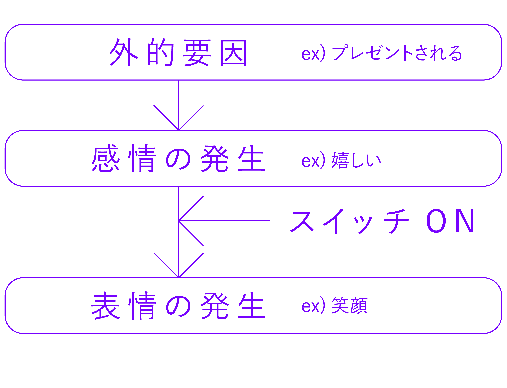
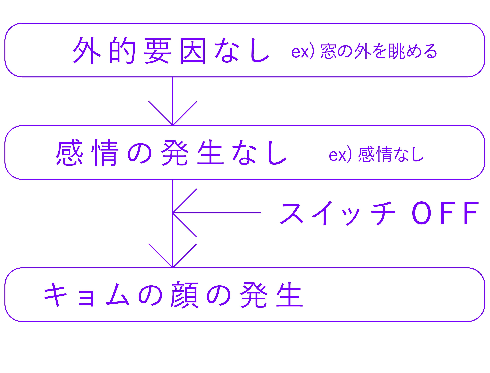

研究：キョムの顔に魅力的な価値をつける。
Study: Add attractive value to Kyomu's face.
背景：我々は誰しもキョムの顔になることがしばしばだ。スマホで映画を見ている時、LINEで笑笑って打ってる時、電車でただ座ってる時、お風呂はいっている時、授業がつまんなくて外を眺めてる時、机だ何か考えてる時。友達や先生は「何ボートしてるんだ！」って言う。キョムの顔をして何が悪い！！僕たち人間にとって、自分の世界に入って一度リセットする時間はとても大切だ！ならば、この顔を魅力的に見えるものにしよう！そしたら誰も文句を言わない。思いっきり虚無の顔ができる。思いっきり、ボートして、自分と向き合える世界のために。
Background: We all often have Kyomu's face. When I'm watching a movie on my smartphone, when I'm laughing and typing on LINE, when I'm just sitting on the train, when I'm taking a bath, when class is boring and I'm looking outside, when I'm thinking about something at my desk. my friends and teachers say "what are you doing boating!" What's wrong with Kyomu's face! ! For us humans, the time to enter our world and reset once is very important! Then let's make this face look attractive! Then no one will complain. I can make a blank face as much as I can. For a world where you can boat to your heart's content and face yourself.
着眼点：今までは１つのものとされていた無表情（キョムの顔）は、実はその中にはさまざまな顔があるということに着目。
Point of focus: Until now, we focused on the fact that the expressionless face (Kyomu's face), which was considered to be one, actually has various faces.
アイデア：キョムの顔を分類化して、名前をつけることで、表情の一分野として位置付け、魅力的なものとする。
Idea: By categorizing and naming Kyomu's face, we can position it as a category of facial expression and make it attractive.
スタディ：キョムの顔を分類する。
Study: Classify Kyomu's face.
contents
１ キョムの顔とは/What is Kyomu's face?
２ 分類/classification
３ ガチャガチャへの展開/Expansion to Gacha Gacha
１ キョムの顔とは/What is Kyomu's face?
１−１ 一般的な表情のシステム
１−１ general facial expression system

１−２ キョムの表情の発生（外的要因発生あり）
１−２ Occurrence of Kyomu's facial expression (external factors occur)
１−３ キョムの表情の発生（外的要因発生なし）
１−３ Occurrence of Kyomu's facial expression (no external factors)

１−４ キョムの顔とは
１−４ What is Kyomu's face?
以上のことより、「キョムの顔は必ずしも喜怒哀楽と感情に関係性があるわけではない。」と仮定した。また、「喜怒哀楽とは切り離された表情を、キョムの顔として表情の一分野として定義」することとした。
Based on the above, I assumed that ``Kyom's face is not necessarily related to emotions and emotions.'' In addition, it was decided to ``define facial expressions separated from emotions as a field of facial expressions as Kyomu's face.''
２−２ 分類方法/Classification method
２−１ー１ 顔の形状の個性の排除
２−１−１ Elimination of facial shape individuality
分類する要素を顔の個性によって左右されるものではなく、表情に注目をした。具体的には顔の各々のパーツの形状ではなく、顔のパーツの動きに注目をした。
The elements to be classified are not determined by the personality of the face, but focused on facial expressions. Specifically, I focused on the movement of facial parts rather than the shape of each facial part.

２−１−２ 喜怒哀楽（感情）の排除
２−１−２ Elimination of emotions
キョムの顔は喜怒哀楽といった感情とは関係性がないと仮定したため、その源である、シーンやアクションといった外的要因を排除して分類した。具体的には、印刷したキョムの顔の顔の部分のみを切り出し、その他の周りの様子や、本人のアクション等が特定できない形とした。
２−３ 分類結果
２−３ Classification result
（２−１−１）（２−１−２）の方法を用い、①目の焦点があっているかどうか、②瞼が重いか軽いか、③口の形（力が入っている、無力、鼻と口の間を伸ばしている、突き出している）の3要素による分類を行った。以下に図式化したものを掲載する。
(2-1-1) Using the method of (2-1-2), (1) whether the eyes are focused, (2) whether the eyelids are heavy or light, and (3) the shape of the mouth (forced, helpless, It was classified according to three factors: extending between nose and mouth, protruding). A schematic is shown below.
３ ガチャガチャへの展開
３ Expansion to Gacha Gacha
３−１ 分類要素のデフォルメ
３−１ Deformation of classification elements
①目の焦点があっているかいないか、②瞼が重いか軽いか、③口の形（力が入っている、無力、鼻と口の間を伸ばしている、突き出している）という要素を簡易的にデフォルメを行い、この要素を軸としたキャラクターデザインを行なった。
(1) whether the eyes are focused or not, (2) whether the eyelids are heavy or light, and (3) the shape of the mouth (strength, helplessness, stretching between the nose and mouth, protruding) are simplified. I deformed the character and designed the character based on this element.
３−２ 添加する要素
３−２ element to add
さらに、①大きさ、②形状、③各パーツの配置、④色彩という要素のパラメータを変えるたり、工夫することでより魅力的なキャラクターデザインを行なった。
In addition, we changed the parameters of (1) size, (2) shape, (3) placement of each part, and (4) color, and made more attractive character designs.
３−３ 魅力的なネーミング
３−３ attractive naming
目的としてキョムの顔を魅力的にすることがあり、そのために名前をつけることで表情の一分野として成立させることとした。そのため、各表情にその顔をより魅力的に見せるための名前を考案した。
The purpose is to make Kyomu's face attractive, so we decided to establish it as a field of facial expressions by giving it a name. Therefore, we devised a name for each expression to make that face look more attractive.
©️2023 yasunobu idei, nagi kambayashi, momoka nozawa, yui furuta